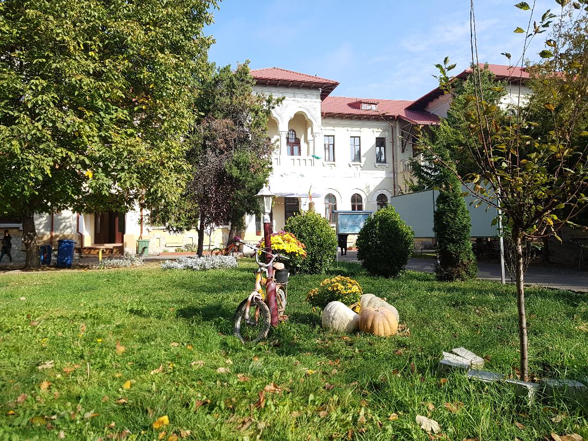

Timp de două decenii, începând cu anul 1979, Colegiul Naţional Pedagogic ,, Constantin Brătescu” a fost Centru de perfecţionare a educatoarelor şi învăţătorilor din judeţele Constanţa şi Tulcea; în Centru s-au format circa 6000 de cadre didactice pentru toată Dobrogea.